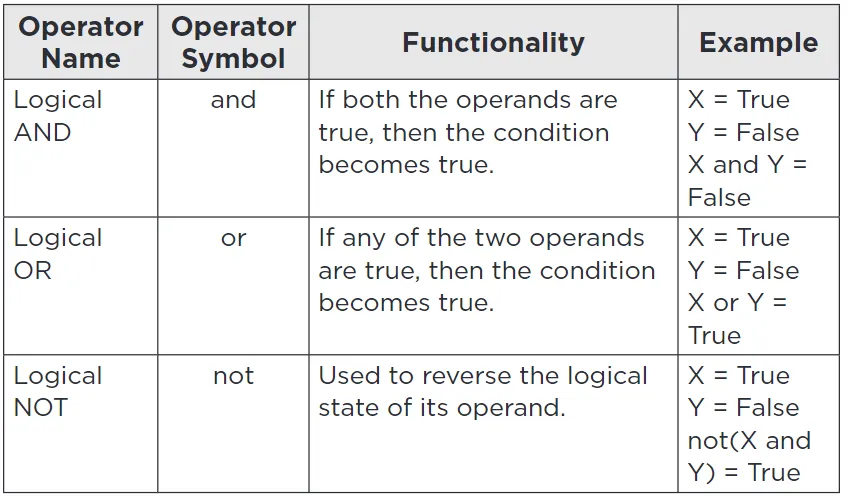

Logical Operators are used to combine two or more conditions.
The result of the operation of a logical operator is a Boolean value: either true or false.

Example
#include < stdio.h>
int main()
{
int a = 25, b = 5;
printf("a && b : %d\n", (a > b) && (a < b));
printf("a || b : %d\n", (a > b) || (a < b));
printf("!a: %d\n", !a);
return 0;
}
Output:
a && b : 0
a || b : 1
!a: 0